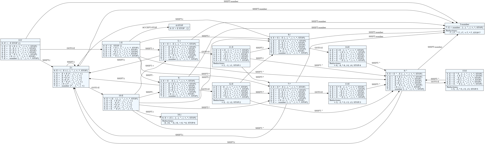
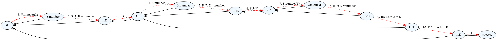

Kreirano 2024-09-30 Mon 13:44, pritisni ESC za mapu, m za meni, Ctrl+Shift+F za pretragu
$ mkdir jsd $ cd jsd $ python -m venv venv $ source venv/bin/activate (venv) $ pip install parglare Looking in indexes: https://pypi.python.org/simple/ Collecting parglare Using cached https://files.pythonhosted.org/packages/66/60/c1bd988a93f5c9114a53452913d51be9556cc56cd7fc9801bbbf03e561da/parglare-0.10.0-py2.py3-none-any.whl Collecting click (from parglare) Using cached https://files.pythonhosted.org/packages/fa/37/45185cb5abbc30d7257104c434fe0b07e5a195a6847506c074527aa599ec/Click-7.0-py2.py3-none-any.whl Installing collected packages: click, parglare Successfully installed click-7.0 parglare-0.10.0
Sa master grane:
$ mkdir jsd
$ cd jsd
$ python -m venv venv
$ source venv/bin/activate
$ pip install https://github.com/igordejanovic/parglare/archive/master.zip
Looking in indexes: https://pypi.python.org/simple/
Collecting https://github.com/igordejanovic/parglare/archive/master.zip
Downloading https://github.com/igordejanovic/parglare/archive/master.zip
- 6.7MB 1.4MB/s
Requirement already satisfied: click in ./venv/lib/python3.7/site-packages (from parglare==0.11.0.dev0) (7.0)
Installing collected packages: parglare
Running setup.py install for parglare ... done
Successfully installed parglare-0.11.0.dev0
Sa master grane iz kloniranog git repozitorijuma:
$ mkdir jsd $ cd jsd $ python -m venv venv $ source venv/bin/activate $ git clone git@github.com:igordejanovic/parglare.git Cloning into 'parglare'... remote: Enumerating objects: 55, done. remote: Counting objects: 100% (55/55), done. remote: Compressing objects: 100% (44/44), done. remote: Total 6138 (delta 20), reused 29 (delta 9), pack-reused 6083 Receiving objects: 100% (6138/6138), 7.60 MiB | 2.87 MiB/s, done. Resolving deltas: 100% (4065/4065), done. $ pip install -e parglare Looking in indexes: https://pypi.python.org/simple/ Obtaining file:///home/igor/jsd/parglare Requirement already satisfied: click in ./venv/lib/python3.7/site-packages (from parglare==0.11.0.dev0) (7.0) Installing collected packages: parglare Running setup.py develop for parglare Successfully installed parglare
grammar = r"""
E: E '+' E
| E '-' E
| E '*' E
| E '/' E
| '(' E ')'
| number;
terminals
number: /\d+(\.\d+)?/;
"""
actions = {
"E": [lambda _, n: n[0] + n[2],
lambda _, n: n[0] - n[2],
lambda _, n: n[0] * n[2],
lambda _, n: n[0] / n[2],
lambda _, n: n[1],
lambda _, n: n[0]],
"number": lambda _, value: float(value),
}
from parglare import Parser, Grammar
g = Grammar.from_string(grammar)
parser = Parser(g, actions=actions)
result = parser.parse("2 * 3 + 4 / 2 / 2")
print("Result = ", result)
Parser klasa (LR parser) razrešava Shift/Reduce konflikte
tako što preferira Shift operaciju (videti prefer_shifts).Parser klase sa GLRParser dobijamo generalizovano parsiranje gde
će u slučaju višeznačnosti biti kreirana sva stabla parsiranja.from parglare import GLRParser, Grammar
g = Grammar.from_string(grammar)
parser = GLRParser(g, consume_input=True, actions=actions)
result = parser.parse("2 * 3 + 4 / 2 / 2")
print("Result = ", result)
print("Broj interpretacija = ", len(result))
Broj interpretacija je Katalanov broj od n gde je n broj binarnih
operacija u izrazu.
1, 2, 5, 14, 42, 132, 429, 1430, 4862, 16796, 58786, 208012, 742900, 2674440...
{} koje navodimo po produkciji.left (odnosno reduce) i right
(odnosno shift).grammar = r"""
E: E '+' E {left}
| E '-' E {left}
| E '*' E {left}
| E '/' E {left}
| '(' E ')'
| number;
terminals
number: /\d+(\.\d+)?/;
"""
from parglare import GLRParser, Grammar
g = Grammar.from_string(grammar)
parser = GLRParser(g, actions=actions)
result = parser.parse("2 * 3 + 4 / 2 / 2")
print("Result = ", result)
grammar = r"""
E: E '+' E {left, 1}
| E '-' E {left, 1}
| E '*' E {left, 2}
| E '/' E {left, 2}
| '(' E ')'
| number;
terminals
number: /\d+(\.\d+)?/;
"""
from parglare import GLRParser, Grammar
g = Grammar.from_string(grammar)
parser = GLRParser(g, actions=actions)
result = parser.parse("2 * 3 + 4 / 2 / 2")
print("Result = ", result)
$ pglr compile --help
Usage: pglr compile [OPTIONS] GRAMMAR_FILE
Options:
--help Show this message and exit.
To compile and check your grammar run:
$ pglr compile <grammar_file>
$ pglr compile robot.pg
Compiling...
Grammar OK.
.pgt i biće automatski učitana
ukoliko postoji. Ukoliko ne postoji biće kreirana u vreme izvršavanja i
upisana u .pgt fajl.parglare će nam dati tačnu
lokaciju i šta na njoj očekuje.
$ pglr compile calc.pg
Error in the grammar file.
Error in file "calc.pg" at position 4,16 => "/' E left*, 2}\n | E ".
Expected: { or | or ; or Name or RegExTerm or StrTerm
$ pglr --debug compile calc.pg
*** GRAMMAR ***
Terminals:
number STOP + - ^ EMPTY ) \d+(\.\d+)? ( EOF / *
NonTerminals:
S' E
Productions:
0: S' = E STOP
1: E = E + E
2: E = E - E
3: E = E * E
4: E = E / E
5: E = E ^ E
6: E = ( E )
7: E = number
*** STATES ***
State 0
0: S' = . E STOP {}
1: E = . E + E {STOP, -, +, ^, ), /, *}
2: E = . E - E {STOP, -, +, ^, ), /, *}
3: E = . E * E {STOP, -, +, ^, ), /, *}
4: E = . E / E {STOP, -, +, ^, ), /, *}
5: E = . E ^ E {STOP, -, +, ^, ), /, *}
6: E = . ( E ) {STOP, -, +, ^, ), /, *}
7: E = . number {STOP, -, +, ^, ), /, *}
GOTO:
E->1
ACTIONS:
(->SHIFT:2, number->SHIFT:3
...
$ pglr viz calc.pg Grammar OK. Generating 'calc.pg.dot' file for the grammar PDA. Use dot viewer (e.g. xdot) or convert to pdf by running 'dot -Tpdf -O calc.pg.dot'
.dot fajl koji možemo pregledati sa .dot pregledačima (npr. xdot)
ili konvertovati u neki grafički format (npr. dot -Tpdf -O calc.pg.dot)
$ pglr trace --help Usage: pglr trace [OPTIONS] GRAMMAR_FILE Options: -f, --input-file PATH Input file for tracing -i, --input TEXT Input string for tracing --help Show this message and exit.
$ pglr trace calc.pg -i "2 + 3 * 5"

calc parsercalc parsergrammar = r"""
E: E '+' E {left, 1}
| E '-' E {left, 1}
| E '*' E {left, 2}
| E '/' E {left, 2}
| '(' E ')'
| number;
terminals
number: /\d+(\.\d+)?/;
"""
actions = {
"E": [lambda _, n: n[0] + n[2],
lambda _, n: n[0] - n[2],
lambda _, n: n[0] * n[2],
lambda _, n: n[0] / n[2],
lambda _, n: n[1],
lambda _, n: n[0]],
"number": lambda _, value: float(value),
}
from parglare import Parser, Grammar
g = Grammar.from_string(grammar)
parser = Parser(g, actions=actions)
result = parser.parse("2 * 3 + 4 / 2 / 2")
print("Result = ", result)
calc primer sa operacijom stepenovanja (simbol ^) koja ima
najviši prioritet i desno je asocijativna.
Proširiti calc primer sa unarnom operacijom faktorijel (simbol !) koja
ima najviši prioritet.
x! = x * (x-1) * ... * 1
Dodati mogućnost definisanja varijabli i nihove upotrebe u calc izrazima:
a = 4 b = 8 a * 2 / b^a^2 + b * a!
examples/calc folderu.ime_funkcije(param1, param2...). Parser
treba da parsira proizvoljan naziv funkcije i proizvoljan broj parametara.
Javiti grešku ukoliko funkcija nije definisana. Podržati izračunavanje
vrednosti za proizvoljne funkcije iz Python math modula.Robot jezikexamples/robot.
Fajl program.rbt
begin
initial 3, 1
up 4 // go up 4 steps
left 9
down // step is optional
right 1
end
Fajl robot.pg
program: "begin" commands=command* "end";
command: initial | move;
initial: INITIAL x=INT "," y=INT;
move: direction=direction steps=INT?;
direction: "up" | "down" | "left" | "right";
// Support for C-like comments
LAYOUT: LayoutItem | LAYOUT LayoutItem;
LayoutItem: WS | Comment | EMPTY;
terminals
INT: /\d+/;
INITIAL: "initial";
WS: /\s+/;
Comment: /\/\/.*/;
import os
from parglare import Grammar, Parser
from parglare import get_collector
action = get_collector()
@action
def INT(_, value):
return int(value)
@action
def initial(context, nodes, x, y):
print("Robot initial position set to: {}, {}".format(x, y))
# We use context.extra to keep robot position state.
context.extra = (x, y)
@action
def program(context, nodes, commands):
return context.extra
@action
def move(context, nodes, direction, steps):
steps = 1 if steps is None else steps
print("Moving robot {} for {} steps.".format(direction, steps))
move = {
"up": (0, 1),
"down": (0, -1),
"left": (-1, 0),
"right": (1, 0)
}[direction]
# Calculate new robot position
x, y = context.extra
context.extra = (x + steps * move[0], y + steps * move[1])
def main(debug=False):
this_folder = os.path.dirname(__file__)
g = Grammar.from_file(os.path.join(this_folder, 'robot.pg'),
debug=debug, debug_colors=True)
parser = Parser(g, actions=action.all, debug=debug,
debug_colors=True)
end_position = parser.parse_file(os.path.join(this_folder, 'program.rbt'))
print("Robot stops at position: {}".format(end_position))
if __name__ == "__main__":
main(debug=False)
Dodati mogućnost kretanja po dijagonali. Na primer:
begin
initial 5, 8
up left 2
down left 5
down 5
end
Dodati for petlju:
begin
initial 4, 7
for i in 1..10
begin
down 3
down right i
end
end
Dodati koncept tekuće lokacije (ugrađene promenjive robotx i roboty),
operacije poređenja <, >, =, i iskaz if:
begin
initial 4, 7
for i in 1..10
begin
down 3
if robotx > 4 up 5
down right i
if roboty < 3
begin
left 10
down
end
end
end